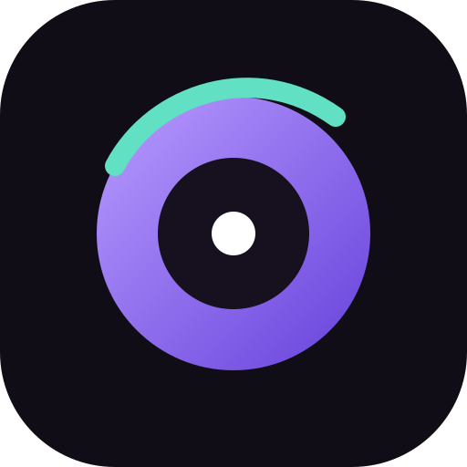

AuroraÚltima atualização: 7 de setembro de 2026
Política de Privacidade
O Aurora é um projeto musical pessoal. Ele usa a autenticação do Google e as APIs oficiais do YouTube somente para oferecer as funções solicitadas pelo usuário autorizado.
Dados acessados
Com sua permissão, o Aurora pode consultar o nome e a imagem do canal, playlists e itens de playlists, além de pesquisar conteúdo no YouTube. A reprodução acontece no player oficial incorporado do YouTube.
Armazenamento
Tokens OAuth permanecem apenas na memória da página e não são gravados pelo Aurora. Curtidas, fila e estado de reprodução ficam no armazenamento local do navegador. O projeto não possui, nesta versão, banco de dados público de usuários.
Compartilhamento
O Aurora não vende dados. Informações são enviadas ao Google/YouTube apenas quando necessário para autenticação, consulta da biblioteca, pesquisa e reprodução, de acordo com as políticas desses serviços.
Controle e remoção
O usuário pode revogar o acesso do Aurora nas configurações da Conta Google e apagar os dados locais limpando o armazenamento do site no navegador.
Contato
Dúvidas podem ser abertas no repositório oficial do projeto.